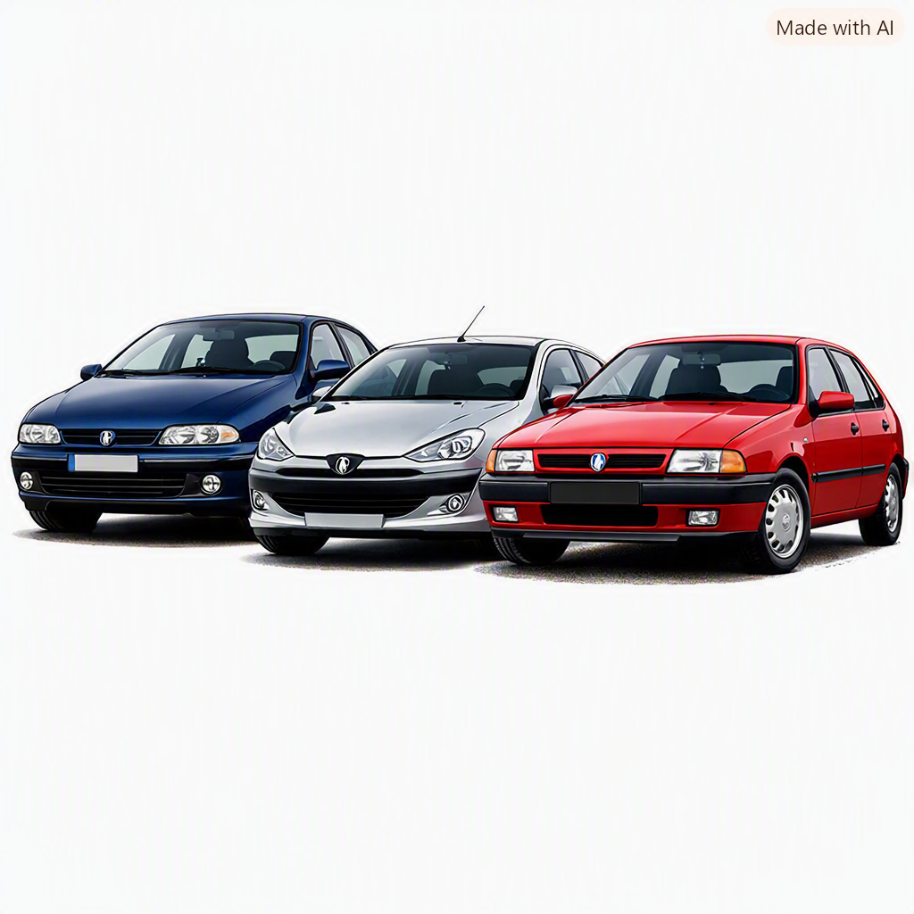
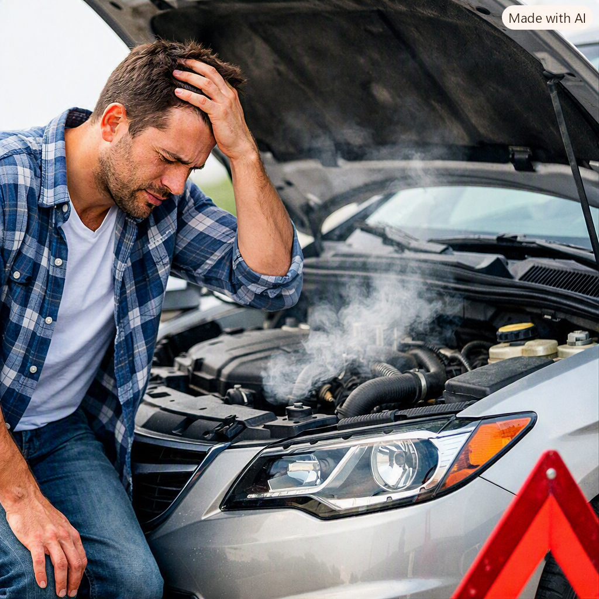
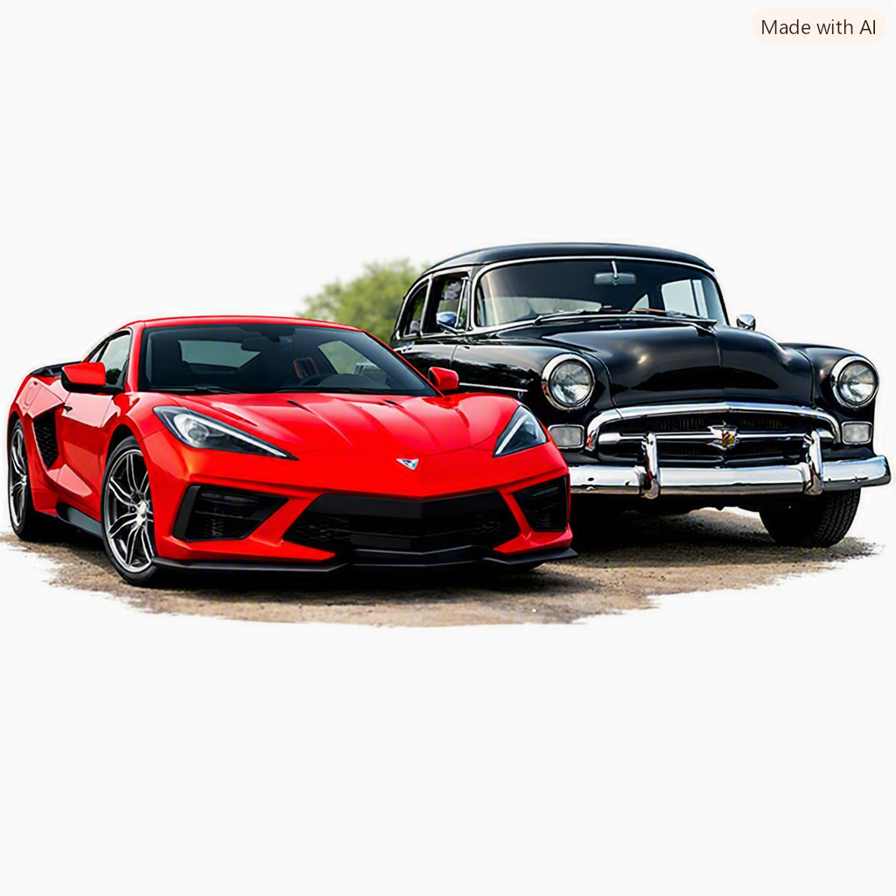
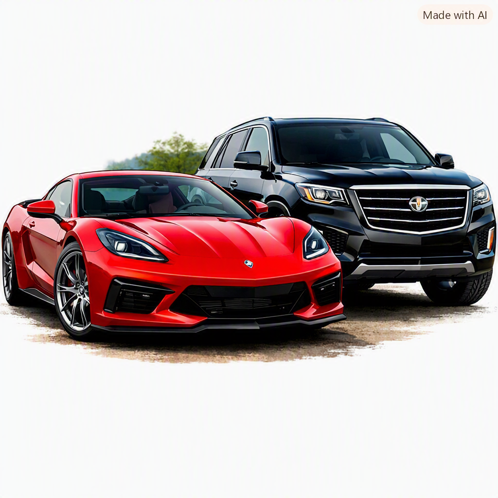
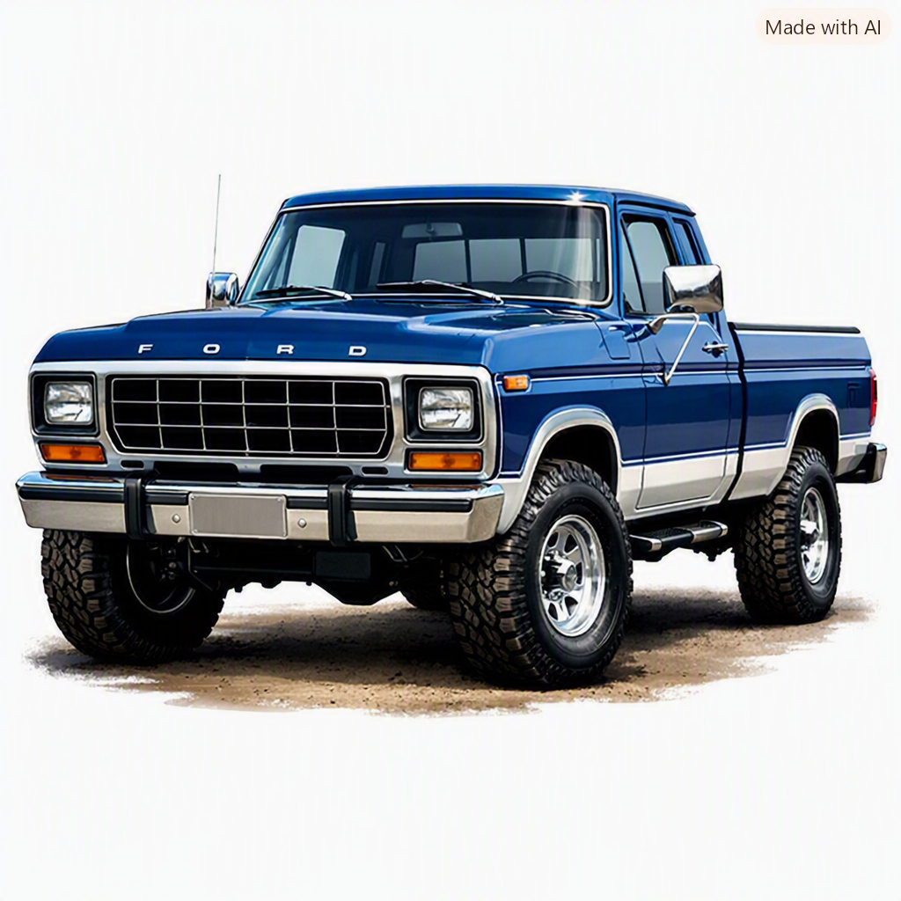

Meu primeiro post
Por: Kauan Henrique
Boas-vindos ao meu novo blog! ao meu blog de carros
Vou compartilhar conhecimento sobre carros
Meu primeiro post
Por: Kauan Henrique
Boas-vindos ao meu novo blog! ao meu blog de carros

Carros que dão problema
Por: Kauan Henrique
Nessa postagem sobre TOP 3 Piores carros:

Problemas sobre os carros
Por: Kauan Henrique
* **Fiat Marea:** Sofria com o acúmulo de borra e travamento do motor de 5 cilindros devido ao uso de óleo inadequado ou trocas fora do prazo, além do cofre do motor extremamente apertado que encarecia qualquer manutenção simples. * **Peugeot 206:** Apresentava desgaste precoce nos rolamentos e mangas de eixo da suspensão traseira — dimensionada para o asfalto europeu —, além de falhas crônicas e intermitentes na central elétrica e multiplexada. * **Fiat Tipo:** Tinha um defeito de projeto na mangueira de alta pressão da direção hidráulica, que se rompia e borrifava fluido inflamável diretamente sobre o coletor de escapamento aquecido, provocando incêndios no motor.

Carro novos X Carros Antigos
Por: Kauan Henrique
Experiência e Estilo (Antigos): Têm forte apelo emocional, mecânica analógica sem eletrônica e potencial de valorização, sendo ideais como hobby de fim de semana. Segurança e Eficiência (Novos): Entregam tecnologia moderna, assistentes de condução, menor consumo de combustível e proteção avançada para o uso diário. Custos e Praticidade: Carros novos oferecem garantia e previsibilidade com maior depreciação inicial, enquanto antigos exigem garimpo de peças e manutenção especializada.

Carros bons
Por: Kauan Henrique
O automóvel une tecnologia, praticidade e liberdade, transformando o transporte diário em uma ferramenta essencial de locomoção e autonomia.

Ford F250
Por: Kauan Henrique
Identidade: Picape de grande porte vendida no Brasil entre 1998 e 2012, símbolo de força no agronegócio. Mecânica: Destacou-se pela extrema durabilidade dos motores diesel MWM e Cummins e pela alta capacidade de carga. Status: Tornou-se um clássico moderno altamente valorizado e desejado no mercado de usados.